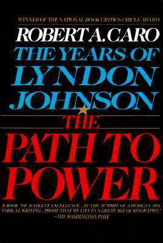

The Path to Power
- Read on 2024-02-01
- Rating: ️️️️️
- Format: 🎧 (40 hours 29 minutes)
This book is so well-written. At the end of the book, I still couldn't tell if Robert A. Caro, the author, likes or dislikes Lyndon B. Johnson. Johnson himself seemed to have some great qualities, and at the same time, some truly repugnant qualities. Never before have I really cared about Johnson, and yet Caro's writing was completely engrossing, I found myself wanting to find out what happened next. With how distasteful some of Johnson's negative qualities are, maybe the quality of the writing is the sole reason as to why people recommend the book/series. Obviously this is only a portion of Johnson's biography, and somehow it feels appropriate for this book to end unceremoniously.
- Prior: Doomsday Book
- Next: Start with Why